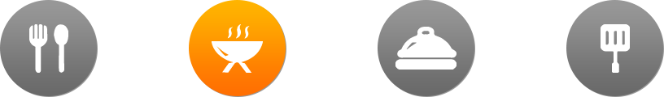
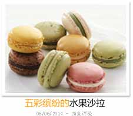
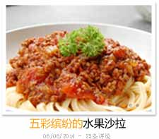
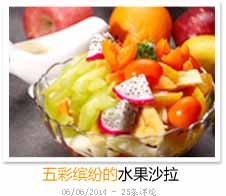
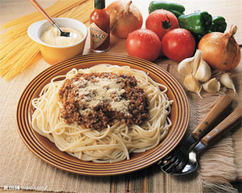

幸福的西餐厅
幸福西餐厅美食，均采用自最安全的各种上等有机食材，由专业西餐厨师精心烹调而成。 所用全部沙拉酱以及配菜酱汁坚持自己秘方调制，绝对不添加任何食品增味剂，色素及味精等，带给您与众不同的用餐体验并确保您在杰克西餐想用的每一道菜品，都会给您留下深刻的委会印象。 带给您与众不同的用餐体验并确保您在杰克西餐想用的每一道菜品，都会给您留下深刻的委会印象。

-
美味甜品
甜品， 是不能做成正餐的东西， 自然也不能估计营养货车其他一些禁锢我们口味偏好的规矩之类， 只要好吃全部都可以引用甜品已成为点心 -
休闲茶饮
茶道， 就是品赏茶的美感之道。 茶道也被视为一种烹茶饮茶的生活艺术， 以一种一茶味媒介的生活礼仪， 一种一茶味修身的生活方式 -
正餐主食
现代英国工人阶级家庭则是当是做点心。 外国人一天中比较忙碌， 所以早餐和午餐都没时间认真吃， 只有到了晚上才能精心准备丰盛的晚餐。 -
风味牛排
“吃牛排”也许是现代的都市一族大时尚， 三伏之日更是迷恋西式生活， 泡酒吧， 吃西餐......真真正正做着都市夜归人。 牛排，可谓吃西餐的代名词。
产品展示

- 

- 


- 

-

鲜嫩多汁的烤牛排
27/20/2015 -52条评论“吃牛排”也许是现代的都市一族大时尚， 三伏之日更是迷恋西式生活， 泡酒吧， 吃西餐......真真正正做着都市夜归人。 牛排，可谓吃西餐的代名词。

香滑爽口的冰激凌
27/20/2015 -32条评论甜品， 是不能做成正餐的东西， 自然也不能估计营养货车其他一些禁锢我们口味偏好的规矩之类， 只要好吃全部都可以引用甜品已成为点心
- 
劲道十足的肉酱面
27/20/2015 -10条评论正宗的餐厅里面，只有这么大口地咀嚼，才能感受到面的筋道和酱汁的浓郁，也只有这样，才能让意面在嘴里融合，却是另一种不同的风味。